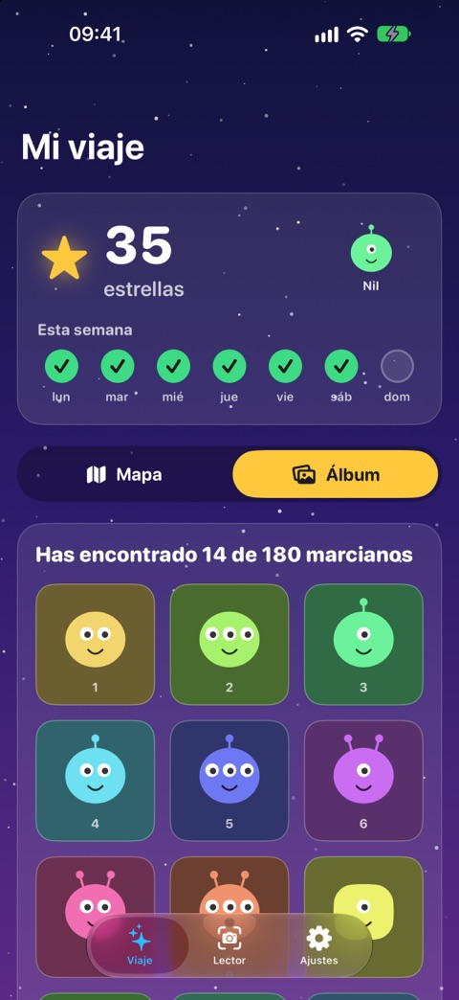
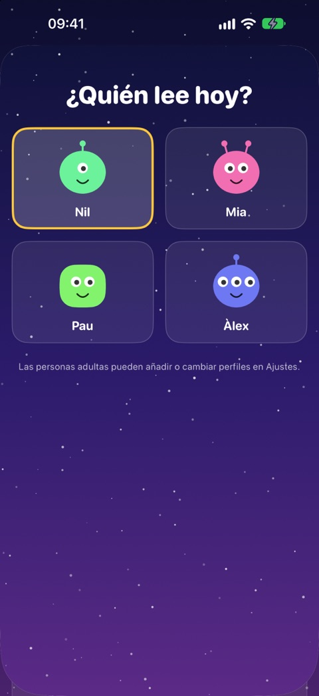

Qué encontrarás
Ejercicios paso a paso
Más de 180 ejercicios en 8 bloques, desde las vocales y las sílabas directas hasta las frases y los textos breves. Cada ejercicio combina calentamiento oral, tablas de sílabas, palabras de marciano, palabras de verdad, dictado y comprensión.
La persona adulta acompaña
Lieger no corrige sola: la persona adulta escucha, marca las palabras que han costado, cronometra tres lecturas y decide si hay que repetir o avanzar. Cada paso tiene una guía.
Un viaje con marcianos
Cada ejercicio da estrellas y descubre un marciano nuevo para el álbum. Sin rachas que se pierdan, sin competiciones y sin mensajes negativos: repetir no es fallar.
Lector con la cámara
Fotografía un texto o impórtalo desde una foto y Lieger lo muestra con letra grande, sílabas de colores o separadas con puntos, mayúsculas y espaciados a medida. Pensado para facilitar la lectura también a niños y niñas con dificultades o trastornos de la lectura.
Un perfil para cada niño o niña
Hasta 8 perfiles en el mismo dispositivo, cada uno con su viaje y sus ajustes de lectura. Sin cuentas, sin correo y sin datos personales.
Catalán y castellano
Los ejercicios existen en las dos lenguas, adaptados a cada una (no son traducciones). Tipografía para primeros lectores y papel sin distracciones.
Míralo por dentro


Cómo funciona
- El niño o la niña lee el ejercicio: tablas de sílabas, palabras de marciano, palabras de verdad, frases o un texto breve.
- La persona adulta escucha, toca las palabras que han costado y cronometra tres lecturas de la misma tabla.
- La persona adulta decide si hay que repetir o avanzar. El niño o la niña gana estrellas y encuentra un marciano nuevo.
Gratis y compra única
Los 3 primeros ejercicios de cada bloque y una captura semanal con el lector son gratuitos. Una sola compra desbloquea todos los ejercicios y el lector sin límite. Pago único, sin suscripciones. Las compras quedan protegidas por una puerta parental.
Lieger está inspirada en la investigación científica sobre el aprendizaje de la lectura (conciencia fonológica, sílabas y lectura repetida) para ayudar a niños y niñas a aprender a leer de forma progresiva y divertida.
Lieger es una herramienta para practicar la lectura; no es un tratamiento médico ni un diagnóstico.
Privacidad
No hay cuentas ni registro, ni analítica, ni publicidad, ni seguimiento. Todo lo que hace la app se queda en el dispositivo. Lee la política de privacidad.